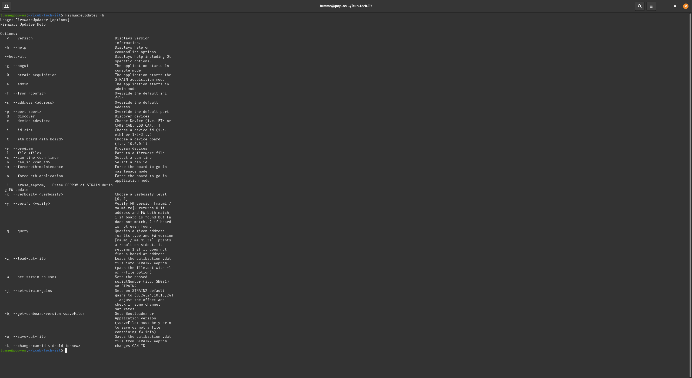
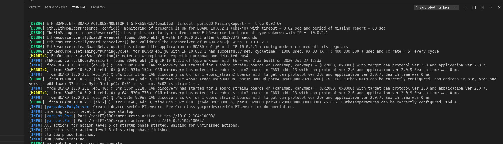

FirmwareUpdater Walkthrough
With the FirmwareUpdater application it is possible to perform GUI-based FW update on both CAN- and ETH-based robots; the commonly used functionalities are:
- Upload
applicationfirmware both onETHboards andCANboards - Change the
IP addressfor ethernet based boards - Change the
CAN IDfor the CAN based boards - Update the
eLoader(advanced option) - Update the
eUpdater(advanced option) - Change
bootstrapmode - Access to the
F/Tsensors calibration data of theSTTRAIN/STRAIN2/STRAIN2C
To launch FirmwareUpdater GUI just open a terminal and type :
FrimwareUpdater
Info
In order to have all possible drivers that FirmwareUpdater can use to communicate with the boards, make sure you have the firmwareupdater.ini file in the place where you launch the GUI
GUI interface
Here are described the main basic and advanced operations that the FirmwareUpdater GUI allows you to do.
Operations on ETH boards
Here are the main operations on the ETH based boards.
Discover
This allow you to discover all ETH boards in the current IP subnet (titpically `10.0.1.X)
-
In a terminal type
FirmwareUpdater -
It opens the GUI, select the
ETHdriver in the devices list and clickDiscoverIf any ETH boards are availabe they'll be listed prompting board info. Detailed processesinfo of each board are available in theBoard Propertiesbox clicking on the board.
Force ETH Maintenance
This allow you tu force the board in maintenance mode and do operations such as upload FW, change IP, change bootstrap mode etc..
- In a terminal type
FirmwareUpdater -a(orFirmwareUpdater --admin) - Select the
ETHdriver in the devices list - Click on
Discover - Select the board by checking its checkbox
- Click on
Force ETH Maintenance
You should see the board running in the eUpdater process and related version.

Force ETH Application
This allow you tu force the board in application mode.
- In a terminal type
FirmwareUpdater -a(orFirmwareUpdater --admin) - Select the
ETHdriver in the devices list - Click on
Discover - Select the board by checking its checkbox
- Click on
Force ETH Application
You should see the board running in the eApplication process and related version.
Set default boot process eUpdater
This allow you tu force the default boot process to eUpdater
- In a terminal type
FirmwareUpdater -a(orFirmwareUpdater --admin) - Select the
ETHdriver in the devices list - Click on
Discover - Select the board by checking its checkbox
- Click on
Set Def Boot eUpdater
Set default boot process eApplication
This allow you tu force the default boot process to eApplication
- In a terminal type
FirmwareUpdater -a(orFirmwareUpdater --admin) - Select the
ETHdriver in the devices list - Click on
Discover - Select the board by checking its checkbox
- Click on
Set Def Boot eApplication

Change board IP address
This allow you to change the IP address of the board.
- In a terminal type
FirmwareUpdater -a(orFirmwareUpdater --admin) - Select the
ETHdriver in the devices list - Click on
Discover - Select the board by checking its checkbox
- Click on
Force ETH Maintenance - Select the board by checking its checkbox
- Click on
Change IP Addressand insert the wanted new IP address in the dialog box.
Upload Application
This allow you to upload a new application binary onto the board uP.
- In a terminal type
FirmwareUpdater -a(orFirmwareUpdater --admin) - Select the
ETHdriver in the devices list - Click on
Discover - Select the board by checking its checkbox
- Click on
Force ETH Maintenance - Select the board by checking its checkbox
- Click on
Upload Applicationand browse to the correct binary application file (official FW binaries are located at robotology/icub-firmware-build) - Click on
Set Def Boot eApplication
Update of the eLoader
This allow you to update the eLoader.
Warning
This is a critical operation! Do this only if strictly necessary and pay attention to respect the steps described! If the procedure fails you'll have to flash the board using the debugger, this means that probably you'll have to unmount the board from the robot if not accessible.
- In a terminal type
FirmwareUpdater -a(orFirmwareUpdater --admin) - Select the
ETHdriver in the devices list - Click on
Discover - Select the board by checking its checkbox
Warning
select only a board at once!
- Click on
Force ETH Maintenance - Select the board by checking its checkbox
- Click on
Upload eLoaderand browse to the respective binary file (i.e. for a EMS select this file) - Verify that the new eLoader has been flashed :
- Select the
ETHdriver in the devices list - Click on
Discover - Check the version in the
Board Propertiespanel
- Select the

Update of the eUpdater
This allow you to update the eLoader.
- In a terminal type
FirmwareUpdater -a(orFirmwareUpdater --admin) - Select the
ETHdriver in the devices list - Click on
Discover - Select the board by checking its checkbox
Warning
select only a board at once!
- Click on
Force ETH Maintenance - Select the board by checking its checkbox
- Click on
Upload Applicationand browse to the binary file (i.e. for a EMS select this file)

- Select the board by checking its checkbox
- Click on
Restart ETH Board(s) - wait at least 5 sec
- Select the
ETHdriver in the devices list - Click on
Discover - The GUI will show that the executing process is
eApplPROGupdater - Select the board by checking its checkbox
- Click on
Upload eUpdaterand browse to the binary file (i.e. for a EMS select this file)

- Click on
Set Def Boot eUpdater - Click on
Restart ETH Board(s) - Select the
ETHdriver in the devices list - Click on
Discover - The board has Startup, Default, and Running processed all set to value eUpdater (see the right panel called
Board Properties,groupBootstrap Processes). - Select the board by checking its checkbox
- Click on
Upload Applicationand browse to the correct binary application file (official FW binaries are located at robotology/icub-firmware-build) - Click on
Set Def Boot eApplication
Operations on CAN boards
Here are the main operations on the CAN based boards connected to ETH boards.
Discover
This allow you to discover all CAN boards connected to a selected ETH board
- In a terminal type
FirmwareUpdater -a(orFirmwareUpdater --admin) - Select the
ETHdriver in the devices list - Click on
Discover - Select the
ETHboard under which you want discoverCANboards by checking its checkbox - Click on
Force ETH Maintenance - Select the
ETHboard under which you want discoverCANboards by checking its checkbox - Click on
Discover
You should see all CAN boards connected to the slected ETH board.
Change CAN ID
This allow you to change the ID to a CAN board connected to a selected ETH board
- In a terminal type
FirmwareUpdater -a(orFirmwareUpdater --admin) - Select the
ETHdriver in the devices list - Click on
Discover - Select the
ETHboard under which you want discoverCANboards by checking its checkbox - Click on
Force ETH Maintenance - Select the
ETHboard under which you want discoverCANboards by checking its checkbox - Click on
Discover - Select the
CAMboard on which you want to change the ID - Click on
Chanhe CAN address - Type the new ID (1-14) int the dialog box an hit OK
You should see the new board CAN ID set.
Upload CAN application
This allow you to upload a new application to a CAN board connected to a selected ETH board
- In a terminal type
FirmwareUpdater -a(orFirmwareUpdater --admin) - Select the
ETHdriver in the devices list - Click on
Discover - Select the
ETHboard under which you want discoverCANboards by checking its checkbox - Click on
Force ETH Maintenance - Select the
ETHboard under which you want discoverCANboards by checking its checkbox - Click on
Discover - Select the
CAMboard on which you want to upload the new application - Click on
Upload Application - Browse to the wanted binary file (i.e. for a
MTB4board select this file)
You should see the new application version set.

Discover hidden CAN boards
This section describes the procedure that you should use when you cannot discover a CAN board connected to a specific ETH board, even if the master ETH board is in maintenance mode and you checked that there are no hardware issues related to the cabling.
Here is the step-by-step procedure (also shown in the animated GIF at the end of the section):
- In a terminal, type
FirmwareUpdater -a(orFirmwareUpdater --admin). - Select the
ETHdriver in the devices list. - Click on
Discover. - Select the
ETHboard under which you aim to discover theCANboard by ticking in its checkbox. - If the
ETHboardStatusisapplication (IDLE), press the buttonForce ETH Maintenanceand wait until the boardStatushas changed tomaintenance.
Warning
It is important that you run the following two points in a row quickly, just one after the other, without waiting more than 5 seconds in between.
- Click on
Restart ETH Board(s). - Click on
Discover.
Note
These two steps are fundamental for sending the discovery signal while the CAN boards are booting. In the animated GIF below, the boards that are not discoverable (e.g., strain2) are in the status canBootloader and not canApplication. Forcing the restart of the ETH boards is crucial as it will power-cycle the CAN boards too. The discovery command should be then sent at that right moment, that is when the CAN board is in canBootloader.
- Update the
CANboard as usual.
Access Strain/Strain2/Strain2c calibration data
In order to acces the GUI containing the calibration data for F/T sensors do the following.
- In a terminal type
FirmwareUpdater -a(orFirmwareUpdater --admin) - Select the
ETHdriver in the devices list - Click on
Discover - Select the
ETHboard under which theStrain/Strain2/Strain2cis attached by checking its checkbox - Click on
Force ETH Maintenance - Select the
ETHboard under which you want discoverCANboards by checking its checkbox - Click on
Discover - Select the
Strain/Strain2/Strain2cboard on which you want to visualize calibation data by checking its checkbox - Click on
Calibrate


Command Line Interface (CLI)
FirmwareUpdater provides a CLI with a set of options to do operations via the command line.
By running FirmwareUpdater -h, you'll be prompted with the list of all available options:

CLI options to change CAN ID and IP address
Here's below a summary of the CLI functionalities:
- CAN board ID via
SOCKETCANdevice - CAN board ID via
ETHdevice - IP address of an ETH board
Change CAN ID via SOCKETCAN
In this example, we change the CAN ID on an mtb board connected via SOCKETCAN from 1 to 2.
The syntax of the command is the following :
FirmwareUpdater -g -e SOCKETCAN -i 0 -c 0 -n 1 -k 2
-g -e SOCKETCAN -i 0 -c 0 is required to use a SOCKETCAN device (i.e. ESD CAN/USB) with ID=0 and canline=0
- -n 1 -k 2 changes old id 1 (-n 1) to 2 (-k 2)

Change CAN ID via ETH
In this example, we change the CAN ID on an mtb board connected via ETH through an ems4 board w/ IP address = 10.0.1.1 from 1 to 2.
The syntax of the command is the following :
FirmwareUpdater -g -e ETH -i eth1 -t 10.0.1.1 -c 1 -n 1 -k 2
-g -e ETH -i eth1 -t 10.0.1.1 -c 1 is required to use a ETH device (i.e. ems4) with ip address = 10.0.1.1 and canline=1
- -n 1 -k 2 changes old id 1 (-n 1) to 2 (-k 2)

Change IP address of an ETH board
In this example, we change the IP address on anems4board from10.0.1.1to 110.0.1.21.
The syntax of the command is the following :
-g -e ETH -i eth1 FirmwareUpdater -g -e ETH -i eth1 -t 10.0.1.1 -2 10.0.1.2
is required to use aETHdevice (i.e.ems4)
--t 10.0.1.1 -2 10.0.1.2changes old iIP address` 10.0.1.1 to 10.0.1.2

How to use ETH boards with a different IP subnet
We provide here the instructions to use ETH boards with a subnet different from the standard 10.0.1.X.
Change IP to the board
Let's assume that the board we use has the 10.0.1.1 IP and that we aim to switch to 10.0.2.1. You ought to follow these steps:
- Run
FirmwareUpdater -a - Select the eth interface and then
Discover - Select the board and then
Force ETH Maintenance - Select
Upload Applicationand flash the new firmware (icub-firmware-buildon branchdevel) - Select
Change IP Addressand input10.0.2.1
Configure the system
- Change the IP address of your ETH interface to
10.0.2.104 - Change the
firmwareupdater.inifile including this lineETH "10.0.2.104:3333" - Reset the board and check if it is discoverable with the
FirmwareUpdater - Change the following
xmlfiles :
/hardware/electronics/pc104.xml
<?xml version="1.0" encoding="UTF-8" ?>
<!DOCTYPE params PUBLIC "-//YARP//DTD yarprobotinterface 3.0//EN" "http://www.yarp.it/DTD/yarprobotinterfaceV3.0.dtd">
<params xmlns:xi="http://www.w3.org/2001/XInclude" robot="single-ETH-2FOC-motor" build="1">
<group name="PC104">
<param name="PC104IpAddress"> 10.0.2.104 </param>
<param name="PC104IpPort"> 12345 </param>
<param name="PC104TXrate"> 1 </param>
<param name="PC104RXrate"> 5 </param>
</group>
</params>
hardware/electronics/knee-eb10-j0-eln.xml
<?xml version="1.0" encoding="UTF-8" ?>
<!DOCTYPE params PUBLIC "-//YARP//DTD yarprobotinterface 3.0//EN" "http://www.yarp.it/DTD/yarprobotinterfaceV3.0.dtd">
<params xmlns:xi="http://www.w3.org/2001/XInclude" robot="single-ETH-2FOC-motor" build="1">
<xi:include href="./pc104.xml" />
<group name="ETH_BOARD">
<group name="ETH_BOARD_PROPERTIES">
<param name="IpAddress"> 10.0.2.1 </param>
<param name="IpPort"> 12345 </param>
<param name="Type"> mc4plus </param>
<param name="maxSizeRXpacket"> 768 </param>
<param name="maxSizeROP"> 384 </param>
</group>
<group name="ETH_BOARD_SETTINGS">
<param name="Name"> "knee-eb10-j0" </param>
<group name="RUNNINGMODE">
<param name="period"> 1000 </param>
<param name="maxTimeOfRXactivity"> 400 </param>
<param name="maxTimeOfDOactivity"> 300 </param>
<param name="maxTimeOfTXactivity"> 300 </param>
<param name="TXrateOfRegularROPs"> 5 </param>
</group>
</group>
<group name="ETH_BOARD_ACTIONS">
<group name="MONITOR_ITS_PRESENCE">
<param name="enabled"> true </param>
<param name="timeout"> 0.020 </param>
<param name="periodOfMissingReport"> 60.0 </param>
</group>
</group>
</group>
</params>
Run yarprobotinterace
Finally, if all the operations above came off, you're then able to run yarprobotinterface using the new subnet 10.0.2.X.
Test
The software has been compiled also on the Linux machine running yarprobotinterface and it works.
See below an example of yarprobotinterface running with a gateway set to 10.0.2.104 connected to an ems4 board with address 10.0.2.1 and an F/T sensor (strain2) connected to it.

Strain2 dedicated CLI Options
The CLI options implemented for the strain2 (F/T sensors) are :
-zor--load-dat-file: Loads the calibration .dat file into STRAIN2 eeprom (pass the file.dat with -l or --file option)example : FirmwareUpdater -g -e ETH -i eth1 -t 10.0.1.1 -c 1 -n 13 -z -l calibrationDataSN003.dat-wor--set-strain-sn <sn>: Sets the passed serialNumber (i.e. SN001) on STRAIN2example : FirmwareUpdater -g -e ETH -i eth1 -t 10.0.1.1 -c 1 -n 13 -w SN001-jor--set-strain-gains: Sets on STRAIN2 default gains to (8,24,24,10,10,24) , adjust the offset and check if some channel saturatesexample : FirmwareUpdater -g -e ETH -i eth1 -t 10.0.1.1 -c 1 -n 13 -j-bor--get-canboard-version <saveFile>: Gets Bootloader or Application version (must be y or n to save or not a file containing fw info) example : FirmwareUpdater -g -e ETH -i eth1 -t 10.0.1.1 -c 1 -n 13 -b y-uor--save-dat-file: Saves the calibration .dat file from STRAIN2 EEPROMexample : FirmwareUpdater -g -e ETH -i eth1 -t 10.0.1.1 -c 1 -n 13 -u
Info
All the example are running on a setup with an EMS4 board with IP=10.0.1.1 and a STRAIN2 board attached to it in the CAN1 line with ID=13
Troubleshooting
Loss of Application Firmware
The application update of several ETH boards launched simultaneously may sometimes give rise to errors that can lead to the loss of the application firmware. This may happen either by using the GUI or via CLI by relying on scripted operations.
Two error conditions are given:
- The board stays in
eUpdater. - The board "disappears", meaning it is no longer displayed in the
FirmwareUpdateras it does not complete the bootloader part which takes about 510 seconds and so it is not in eithereApplicationoreUpdater.
Here's below the steps to recover the board in both cases:
- For Case 1:
- Start
FirmwareUpdater -a. - Reload the application firmware.
- Select the board and click on
Set Def Boot eApplicationand soon afterwards onForce ETH Application.
- Start
- For Case 2:
- Start
FirmwareUpdater -a. - Power-cycle the motors.
- Run the
discoverof the ETH boards within 510 seconds from the boot. You will see all the ETH boards ineUpdater, including those that disappeared. - Apply the steps above for Case 1 to reload the application firmware.
- Start
Note
A similar procedure applies to CAN boards.
Useful Resources
Below a list of useful links:
- Firmware binaries docs
- Firmware binaries
- Low-level boards programming (using degugger/programmer)